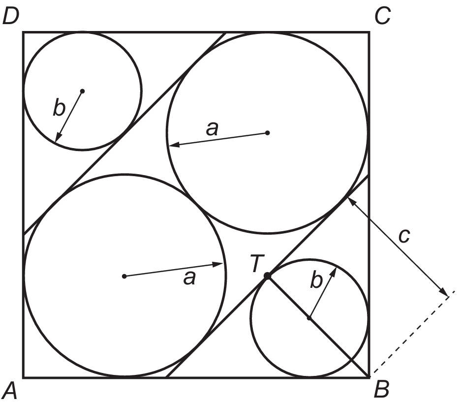
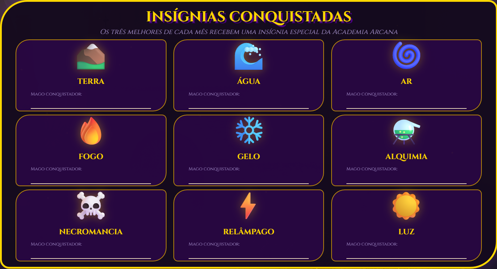
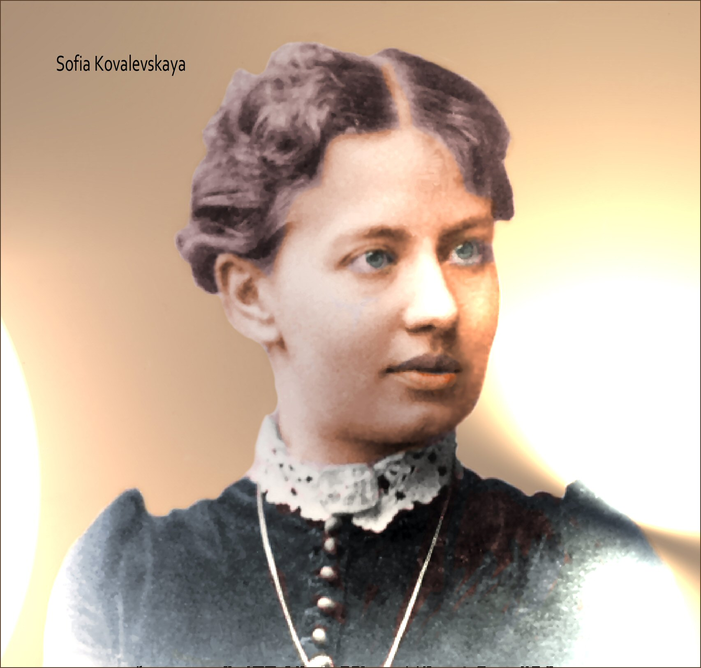

Ordem dos Mathemagos OlímpicosCiclo 2 (Setembro–Dezembro)
Grão-Conselho dos Magos
Instituto Federal do Paraná
Torre Assis Chateaubriand

Justifique os valores encontrados. Prazo: Lua Minguante • 03/10.
A resposta deve ser bem elaborada e o mais correta possível. Respostas completas, claras e corretas têm prioridade na classificação.
Critério de desempate: ordem de envio.
Pontuação conhecida após o Desafio 1
Demais colocações não informadas.
Ciclo 2 • Resultado informado
Pontuação acumulada • Ciclos 1 e 2


Matemática russa que fez contribuições importantes ao estudo das equações diferenciais e da mecânica.
Ela também investigou como um corpo rígido gira em torno de um ponto fixo — um problema em que matemática e física se encontram.